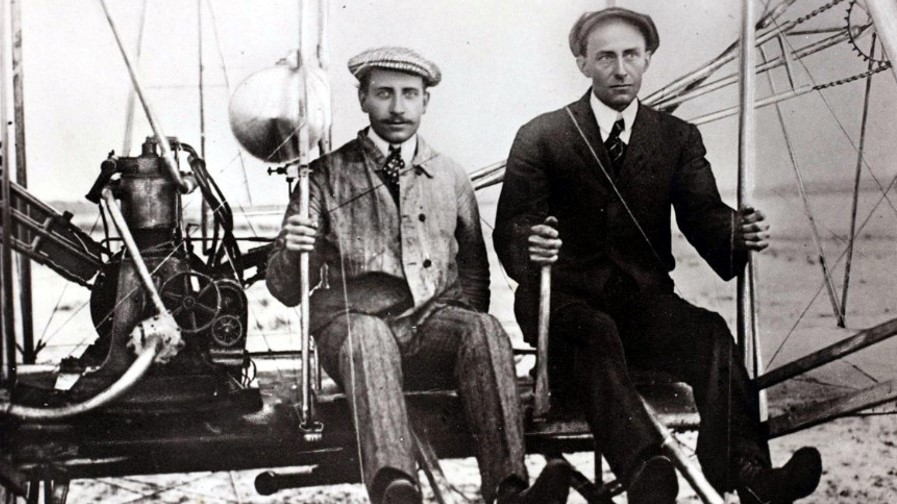
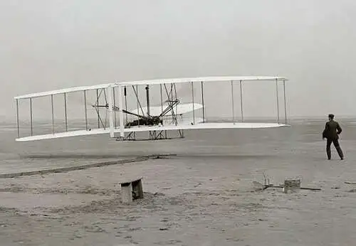

An airplane or aeroplane (informally plane) is a fixed-wing aircraft that is propelled forward by thrust from a jet engine, propeller, or rocket engine. Airplanes come in a variety of sizes, shapes, and wing configurations. The broad spectrum of uses for airplanes includes recreation, transportation of goods and people, military, and research. Worldwide, commercial aviation transports more than four billion passengers annually on airliners and transports more than 200 billion tonne-kilometers of cargo annually, which is less than 1% of the world's cargo movement.
Orville and Wilbur Wright grew up in Dayton, Ohio, and developed an interest in aviation after learning of the glider flights of the German engineer Otto Lilienthal in the 1890s. Unlike their older brothers, Orville and Wilbur did not attend college, but they possessed extraordinary technical ability and a sophisticated approach to solving problems in mechanical design. They built printing presses and in 1892 opened a bicycle sales and repair shop. Soon, they were building their own bicycles, and this experience, combined with profits from their various businesses, allowed them to pursue actively their dream of building the world’s first airplane. At 10:35 a.m. on December 17, in front of five witnesses, the aircraft ran down a monorail track and into the air, staying aloft for 12 seconds and flying 120 feet. The modern aviation age was born. Three more tests were made that day, with Wilbur and Orville alternately flying the airplane. Wilbur flew the last flight, covering 852 feet in 59 seconds.

